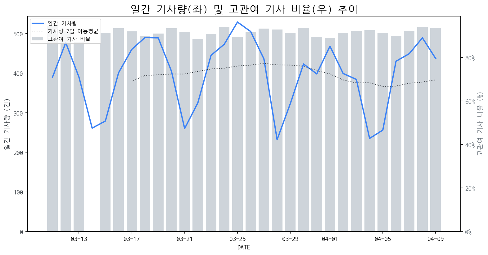

1
시장 활동 지표
기사량 추세 & 이상 징후 탐지
시장의 '전체 기사량'이 평소보다 비정상적으로 급증했는지(Spike)를 차트로 확인하고, LLM이 분석한 급등의 핵심 원인을 파악할 수 있음

고관여 기사란? 산업 연관 키워드로 수집된 기사들 중 디스플레이 키워드에 가중치를 반영하여 도출된 관련성 높은 기사
수집된 기사 수 (2026-04-09)
437
+10% WoW
기사량 변동 수준 (7일 이동평균 대비)
±6.7% 이하
2
오늘의 키워드
급격한 관심 ↑, 주목해야 할 키워드
1
oled
+9.3σ
삼성디스플레이의 QD-OLED 모니터 출하량이 500만대를 돌파하며 시장 성장을 견인했기 때문입니다.
Related Metrics
금일 언급량: 54, 전일 대비: +47
Interpretation
QD-OLED 시장 확대 신호
Next Step
핵심 토픽 'OLED_Topic' 관련 신호입니다. 3번 섹션(키워드 감성분석)에서 해당 토픽의 감성 변동을 교차 확인하세요.
2
삼성디스플레이
+7.2σ
삼성디스플레이, 모니터용 QD-OLED 500만대 누적 출하 돌파 소식이 급증의 핵심입니다.
Related Metrics
금일 언급량: 26, 전일 대비: +25
Interpretation
QD-OLED 시장 경쟁력 강화
Next Step
핵심 토픽 'OLED_Topic' 관련 신호입니다. 3번 섹션(키워드 감성분석)에서 해당 토픽의 감성 변동을 교차 확인하세요.
3
모니터
+2.2σ
삼성디스플레이의 모니터용 QD-OLED 500만대 출하 돌파 소식이 주효했습니다.
Related Metrics
금일 언급량: 12, 전일 대비: +9
Interpretation
OLED 전환 가속화
Next Step
'모니터' 관련 상세 기사 및 경쟁사 반응 모니터링
4
lcd
+1.6σ
삼성디스플레이의 QD-OLED 모니터 패널 500만대 돌파 소식이 LCD 대체 트렌드를 부각하며 급증했습니다.
Related Metrics
금일 언급량: 4, 전일 대비: +4
Interpretation
LCD 경쟁력 약화
Next Step
'lcd' 관련 상세 기사 및 경쟁사 반응 모니터링
3
실시간 Risk 키워드
경계해야 할 시그널 탐지
특정 토픽의 부정 감성 점수가 급등할 때 이를 즉시 탐지하고, "근거 기사" 링크를 통해 리스크의 실체를 빠르게 파악할 수 있음
키워드 분석 결과, 오늘은 걱정할 만한 하락 신호가 없습니다. (부정 언급량 변화: +1.5σ 이내)
4
주요 이벤트 모니터링
실시간 산업 동향 파악을 위한 주요 활동
최근 발생한 주요 기업들의 신제품 출시, 투자 등 주요 이벤트를 제공하여 매일 경쟁사 동향을 확인할 수 있음
삼성디스플레이의 QD-OLED 패널이 누적 생산량 500만대를 돌파하며 모니터 시장에서 중요한 변화를 이끌고 있습니다. 이는 QD-OLED 기술이 프리미엄 모니터 시장에서 강력한 경쟁력을 확보했음을 시사합니다.
Impact
QD-OLED의 성공은 프리미엄 디스플레이 시장의 경쟁 구도를 재편하고, OLED 기술 채택 확대 및 관련 기술 개발 경쟁을 가속화할 것입니다.
Next Step
경쟁사들은 QD-OLED의 성능과 시장 반응을 면밀히 분석하여 차별화된 기술 개발 또는 가격 경쟁력 확보 방안을 모색해야 합니다.
삼성디스플레이가 하반기 애플과 구글에 최신 'M16 OLED' 패널 공급을 시작한다. 이는 프리미엄 스마트폰 시장에서의 경쟁력 강화와 차세대 디스플레이 기술 리더십 확보를 위한 전략이다.
Impact
이번 공급은 프리미엄 스마트폰 시장의 OLED 채택을 가속화하고, 삼성디스플레이의 시장 지배력을 더욱 공고히 할 것으로 예상된다.
Next Step
경쟁 디스플레이 제조 기업들은 차세대 OLED 기술 개발 및 생산 능력 확대를 통해 시장 점유율 유지 및 확대를 위한 전략을 신속히 수립해야 한다.
하만이 전장 부문의 완결체 구축을 통해 미래 자동차의 오감 만족 경험 제공을 선언했다. 이는 단순한 부품 공급을 넘어 통합적인 솔루션을 제공하겠다는 의지를 보여준다.
Impact
하만의 전장 사업 완결체 구축은 차량 내 디스플레이 시스템의 통합 및 고도화를 촉진하고, 사용자 경험 중심의 차별화된 디스플레이 기술 경쟁을 심화시킬 것으로 예상된다.
Next Step
디스플레이 제조 기업은 단순 패널 공급을 넘어 차량 내 디스플레이가 제공할 수 있는 사용자 경험 향상 솔루션과의 연계 및 통합 기술 개발에 집중해야 한다.
대형OLED에 필적하는 고가격을 형성하고 있는 마이크로OLED 기술의 성장세가 가속화되고 있습니다. 이에 따라 마이크로OLED의 대중화 시점에 대한 업계의 관심이 높아지고 있습니다.
Impact
마이크로OLED의 기술 발전 및 대중화는 VR/AR 기기, 스마트 글래스 등 차세대 디스플레이 시장의 성장을 견인하고, 기존 디스플레이 시장의 경쟁 구도에 변화를 가져올 수 있습니다.
Next Step
마이크로OLED 기술 개발 및 생산 역량 확보를 통해 미래 디스플레이 시장 선점을 위한 투자를 검토해야 합니다.
애플이 폴더블 폰을 출시하며 시장에 '메기 효과'를 가져올 것으로 기대됩니다. 이에 따라 관련 A주 테마주들이 다시 조명받고 있습니다.
Impact
애플의 폴더블 폰 시장 진입은 디스플레이 업계 전반의 기술 경쟁을 심화시키고, 새로운 시장 성장을 견인할 것으로 예상됩니다.
Next Step
디스플레이 제조 기업은 애플의 진입에 따른 시장 변화에 선제적으로 대응하기 위해 차세대 폴더블 디스플레이 기술 개발 및 생산 능력 확충을 가속화해야 합니다.